Vision-based Excavator Pose Estimation for Automatic Control
Guangxu Liu, Qingfeng Wang, Tao Wang, Bingcheng Li, Xiangshuo Xi · Automation in Construction 157 (2024) 105162
한줄 요약 — 2000년부터 2023년 1월까지의 영문 동료평가 문헌 178편을 검색해 68편을 정량·정성 분석하고, 마커리스·마커·딥러닝 자세추정을 자동 궤적제어 관점에서 비교했다. 기존 연구는 20 Hz부터 프레임당 3~4초까지 처리속도가 넓고 출력도 픽셀 키포인트에 머문 경우가 많아, 실제 제어에는 좌표변환·가림 대응·실시간 검증이 더 필요하다.
1.연구 배경 및 동기
안전 모니터링용 비전에서 자동 궤적제어용 자세 피드백으로
굴삭기의 자동 궤적제어에는 붐·암·버킷의 현재 자세를 실시간으로 알아야 한다. IMU, 실린더 변위계와 같은 접촉식 센서는 직접적인 계측이 가능하지만 진동과 충격, 센서 잡음, 설치와 유지보수 비용에 영향을 받는다. 카메라는 비접촉식으로 넓은 작업영역을 관찰할 수 있어 대안이지만, 기존 건설 비전 연구의 상당수는 작업자 안전, 장비 검출, 생산성 분석에 집중해 제어 피드백으로 바로 쓰기 어렵다.
이 논문은 굴삭기 검출 전반을 나열하는 대신 자동제어를 위한 manipulator pose vision-based feedback에 초점을 둔다. 연구대상은 버킷을 장착한 유압굴삭기이며 산업용 로봇과 단순 환경인식은 제외한다. 비전 응용을 검출·추적, 행동인식, 자세추정으로 나누고 자세추정 방법을 마커리스 결정론적 방법, 인공마커 방법, 딥러닝 방법으로 정리한다.
굴삭기는 산업용 로봇과 카메라 배치 및 기구학 조건이 다르다. 카메라는 지면·벽·운전실에 놓이는 eye-to-hand 구성이 많고, 보행과 선회 때문에 기준좌표계가 이동한다. 붐·암·버킷의 회전축은 대체로 평행하며 출력도 버킷 끝점·방향, 실린더 변위, 상대 관절각처럼 다양하다. 따라서 산업용 로봇의 손-눈 교정법이나 단일 정확도 수치를 그대로 적용하기 어렵다.
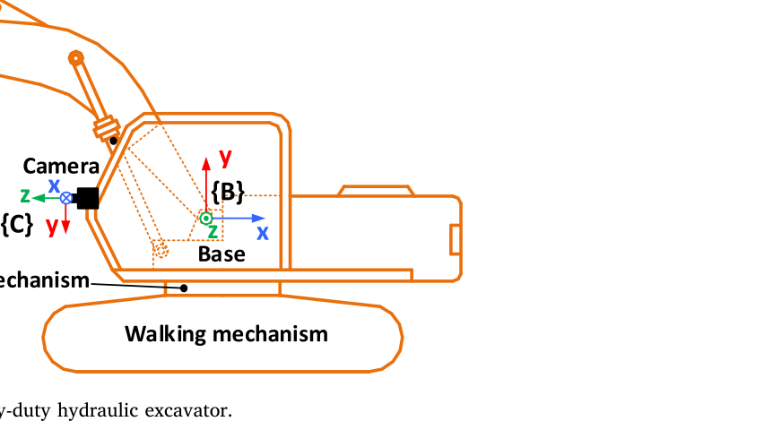
원문 Figure 6 · PDF p.9 — Fig. 6. Structure of heavy-duty hydraulic excavator.
선행 연구의 한계
기존 굴삭기 비전 연구는 안전·생산성 평가 비중이 높고 실제 자동제어 루프의 입력으로 검증된 연구는 적다.
마커는 계산이 단순하지만 거리 증가, 가림, 토사 오염과 물리적 손상에 취약하다.
윤곽·색상 기반 마커리스 방법은 조명과 배경 변화에 영향을 받고 수작업 특징과 장비 모델 의존성이 크다.
딥러닝은 복잡한 장면에 강건할 잠재력이 있지만 많은 주석자료가 필요하고 출력이 픽셀 키포인트에 머무는 경우가 많다.
이 연구의 기여
2000년부터 2023년 1월까지 Web of Science 문헌을 단계적으로 선별해 68편의 혼합 정량·정성 리뷰를 수행했다.
굴삭기 비전 연구를 응용목적, 자세추정 방법, 자동제어 피드백 출력의 관점에서 재분류했다.
제어 적용성을 rapidity, accuracy, reliability, less cost and time의 네 요구조건으로 정리했다.
마커 기반 방법과 딥러닝 방법 각각에 대해 가림 대응, 교정, 시계열 모델, 합성데이터와 연산가속 방향을 제안했다.
2.방법론 및 시스템 구성
리뷰는 연구질문 설정, 검색, 제목·초록 선별, 전문 선별, 정량·정성 분석의 다섯 단계로 진행됐다. Web of Science에서 2000년부터 2023년 1월 사이 발표된 영문 동료평가 저널·학술대회 논문을 찾았고 최초 178편에서 제목·초록 검토 후 96편, 전문 검토 후 68편을 최종 분석대상으로 삼았다.
정량분석에서는 연도, 게재원, 국가와 키워드 분포를 집계했다. 정성분석에서는 굴삭기 비전의 목적과 자세추정 원리를 분류하고, 각 연구가 제공하는 출력·정확도·처리속도를 자동제어 요구조건과 대조했다. 표에 모은 수치들은 서로 다른 선행연구의 장비·카메라·평가지표에서 나온 값이므로 단일 공통 벤치마크 결과로 취급하지 않는다.
처리 파이프라인
1
범위와 연구질문 설정
버킷 유압굴삭기의 manipulator pose를 카메라로 추정해 자동제어에 활용하는 연구로 범위를 제한하고 산업용 로봇 및 환경객체 검출만 다룬 연구는 제외했다.
2
문헌 검색
Web of Science에서 2000년~2023년 1월의 영문 동료평가 저널·학술대회 문헌 178편을 수집했다.
3
단계적 선별
제목과 초록을 검토해 96편으로 줄이고, 전문의 연구대상과 비전 활용내용을 확인해 최종 68편을 남겼다.
4
정량 서지분석
연도별 논문 수, 주요 학술지, 국가, 키워드 동시출현을 집계해 연구성장과 주제분포를 파악했다.
5
제어 적용성 분석
마커리스·마커·딥러닝 자세추정을 신속성, 정확성, 신뢰성, 구축시간·비용 관점에서 비교하고 향후 기술과제를 도출했다.
원문 수식과 의미
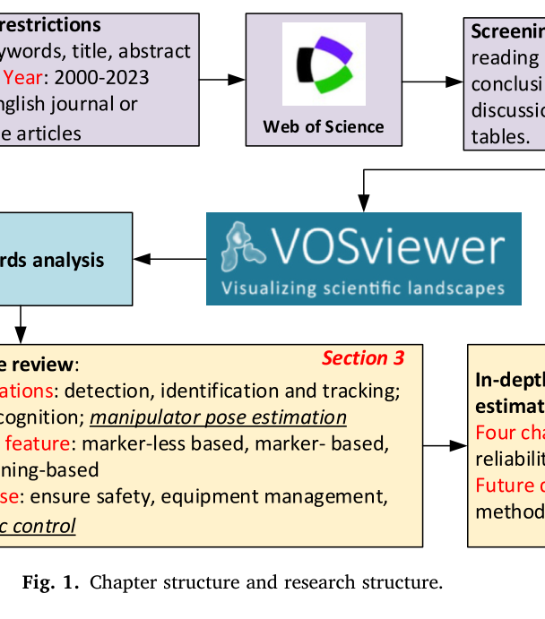
원문 Figure 1 · PDF p.2 — Fig. 1. Chapter structure and research structure.
3.핵심 기술
결정론적 마커리스 자세추정
장비의 색, HOG 특징, 윤곽과 기하구조를 영상에서 찾아 붐·암·버킷의 선분이나 관절을 복원한다. 별도 마커가 없어 현장 설치부담은 작지만 조명, 배경, 토사에 의한 외형변화와 수동 특징설계에 민감하다. 장비 모델과 카메라 교정오차가 최종 버킷 위치에 누적될 수 있다.
장비 자체의 색상·윤곽·기하학적 제약을 활용한다.
마커의 손상 문제는 없지만 배경분리와 장비별 모델링이 필요하다.
영상좌표를 관절각이나 기준좌표 자세로 바꾸는 후처리가 제어 정확도를 좌우한다.
인공마커 기반 자세추정
AprilTag, ArUco, saddle point와 색상표식 등을 붐·암·버킷에 부착하고 카메라에서 검출해 자세를 계산한다. 동일 하드웨어에서 딥러닝보다 계산이 단순해 빠른 피드백에 유리하지만, 장거리에서 작은 표식이 흐려지고 버킷 주변 표식은 토사·가림·충격에 노출된다.
선행연구에는 정적 약 0.5°, 동적 약 1°에 가까운 각도결과와 3 cm 이내 버킷 끝점 오차가 보고됐다.
다중마커와 다중카메라는 가림을 줄일 수 있지만 카메라 간 교정과 영상왜곡 문제가 늘어난다.
운전실 카메라는 장비와 함께 움직이는 장점이 있으나 붐·암의 자기 가림과 제한된 시야를 해결해야 한다.
딥러닝 키포인트·자세추정
CNN, R-CNN, YOLO, SSD, hourglass 계열은 복잡한 현장에서 장비 부품이나 관절 키포인트를 검출한다. 다양한 장면을 학습하면 수작업 특징보다 강건할 수 있으나 다수 연구의 출력은 이미지 픽셀 좌표이므로, 이를 굴삭기 기준좌표의 관절각·실린더 변위로 바꾸는 교정과 기구학 단계가 추가로 필요하다.
리뷰된 한 연구의 PCK는 hourglass 91.19%, CPN 91.78%로 보고됐다.
한 CNN 관절각 연구의 평균 자세오차 9.63°는 안전 모니터링에는 쓸 수 있어도 정밀제어에는 부족하다고 평가됐다.
원문 Figure 2 · PDF p.4 — Fig. 2. Publication years of literature.
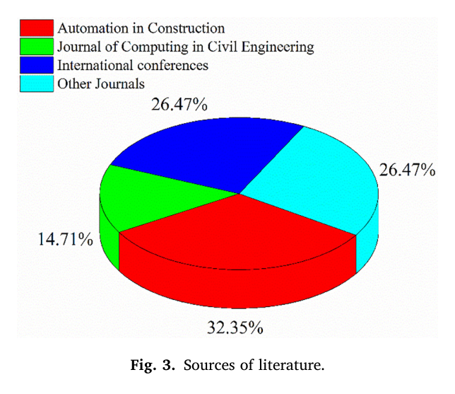
원문 Figure 3 · PDF p.4 — Fig. 3. Sources of literature.
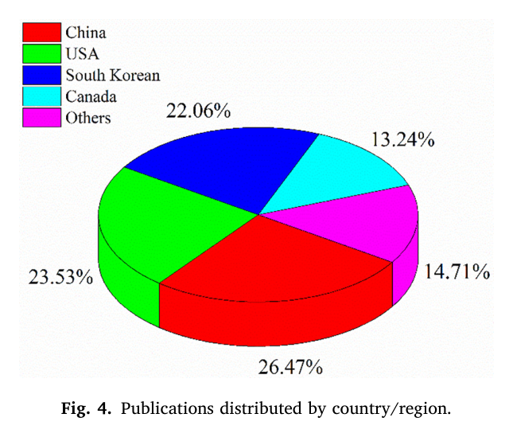
원문 Figure 4 · PDF p.4 — Fig. 4. Publications distributed by country/region.
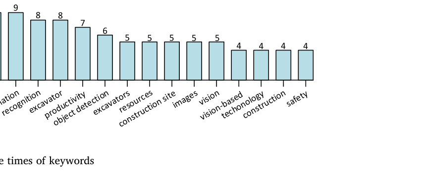
원문 Figure 5 · PDF p.5 — Fig. 5. Occurrence times of keywords
핵심 결과 해석
최종 68편 가운데 Automation in Construction 게재 논문이 22편, 32.35%로 가장 많았고 Journal of Computing in Civil Engineering 10편, 14.71%를 합하면 47.06%였다. 국가별로는 중국 18편, 26.47%였으며 미국 23.53%, 한국 22.06%, 캐나다 13.24%였다. 259개 키워드 중 67개가 2회 초과, 36개가 3회 초과, 26개가 4회 초과 등장했다.
선행연구 수치는 방법과 조건에 따라 폭이 크다. 마커 연구에는 정적 약 0.5°와 동적 약 1°에 가까운 각도오차, 3 cm 이내 버킷 끝점 위치오차가 보고됐다. 딥러닝 연구에는 PCK 91.19%·91.78%, 평균 자세오차 9.63°, 최대 AP 0.927 등이 보고됐지만, 상당수 출력이 픽셀 키포인트이거나 실시간 제어루프에서 검증되지 않아 숫자만으로 제어 적합성을 판단할 수 없다.
처리속도도 프레임당 3~4초 또는 2초가 걸린 연구부터 해상도 640×480에서 20 Hz, 1280×1960에서 5 Hz를 낸 사례까지 다양하다. 접촉센서가 수백~수천 Hz로 동작할 수 있는 것과 비교하면 비전은 지연을 줄여야 한다. 리뷰는 정확도뿐 아니라 가림·마커손상·카메라 이동·교정오차·motion blur·데이터 구축비용을 함께 평가해야 자동제어 피드백의 실효성을 판단할 수 있다고 결론짓는다.
정량 결과
평가 항목
정량 결과
조건·맥락
원문 근거
문헌 선별 규모
178 → 96 → 68 papers
초기 검색, 제목·초록 선별, 전문 선별 후 최종 분석
PDF p.3
주요 게재원
Automation in Construction 22편(32.35%); JCCE 10편(14.71%)
최종 68편의 출처 분포; 두 학술지 합계 47.06%
PDF p.3
국가별 비중
중국 26.47%; 미국 23.53%; 한국 22.06%; 캐나다 13.24%
최종 분석문헌의 국가 분포
PDF p.4
마커 기반 선행연구 정확도
정적 약 0.5°; 동적 약 1°; 버킷 끝점 3 cm 이내
리뷰 표의 서로 다른 선행연구 [58], [68] 보고값
PDF p.8
딥러닝 선행연구 PCK
91.19% HG; 91.78% CPN
리뷰된 선행연구 [61]의 키포인트 성능
PDF p.8
영상 처리속도 사례
640×480 20 Hz; 1280×1960 5 Hz
리뷰된 선행연구 [65]의 해상도별 처리속도
PDF p.10
CNN 관절자세 오차 사례
평균 9.63°
리뷰된 선행연구 [63]; 정밀 자동제어에는 부족하다고 논의
PDF p.10
실패 사례와 경계조건
카메라 시야 밖으로 링크가 나가거나 붐·암·버킷과 토사가 마커를 가리면 자세가 일시적으로 소실될 수 있다.
영상 키포인트 검출이 정확해도 카메라 왜곡, 외부교정, 장비 기구모델 오차가 좌표변환 과정에서 누적된다.
카메라 위치나 굴삭기 모델이 바뀌면 end-to-end 네트워크가 학습한 관계가 무효화될 수 있고 새 데이터 주석비용이 발생한다.
높은 안전 모니터링 정확도를 보고한 모델도 처리지연이 크거나 관절각·실린더 변위를 출력하지 않으면 폐루프 제어에 직접 사용할 수 없다.
5.한계 및 향후 연구
현재 한계
검색원이 Web of Science이고 영문 동료평가 문헌으로 제한되어 다른 데이터베이스, 비영어권 연구와 산업 보고서가 제외될 수 있다.
버킷 유압굴삭기에 범위를 한정해 다른 작업도구, 광산 초대형 장비와 산업용 로봇의 연구는 분석대상에서 제외했다.
68편의 성능지표와 시험조건이 서로 달라 각도·거리·PCK·AP를 하나의 공통 순위로 직접 비교할 수 없다.
다수 문헌이 안전·생산성 목적이어서 자동 궤적제어에 필요한 지연, 좌표출력과 폐루프 안정성의 실증자료가 부족하다.
향후 연구
마커 가림에는 다중마커, 다중카메라, wide-angle 카메라와 Kalman·particle filter 기반 시간추적을 결합할 필요가 있다.
오염과 손상에 강한 재료 및 색·질감·형상을 함께 쓰는 마커를 개발하되 추가 교정과 왜곡오차를 관리해야 한다.
CAD 합성자료와 per-pixel 3D annotation으로 장비모델·카메라·자세 다양성을 확보하고 실제영상과의 domain gap을 줄여야 한다.
Transformer의 전역관계, RNN의 시계열 정보와 GPU·TPU 가속을 이용해 정확도와 실시간성을 함께 개선해야 한다.
영상에서 관절각을 직접 예측하는 방식과 키포인트-기구학 2단계 방식을 동일한 실기 제어과제에서 비교해야 한다.
6.한마디로 정리
핵심 방법은?
Web of Science 문헌 178편을 단계적으로 68편까지 선별하고 마커리스·마커·딥러닝 방법을 자동제어 피드백의 네 요구조건으로 분석했다.
핵심 결과는?
기존 문헌에는 높은 개별 정확도 사례가 있으나 처리속도와 출력형식이 다양하고, 실제 폐루프 제어에서 동시에 정확·신속·강건함을 입증한 연구는 제한적이다.
한계는?
문헌범위와 지표가 이질적이며 다수 결과가 서로 다른 데이터와 단위에서 보고돼 직접 순위화할 수 없고 실시간 제어검증도 부족하다.
필드로봇의 자동작업 시스템에서는 자세추정 정확도 하나만으로 센서를 고를 수 없다. 이 리뷰의 네 기준은 센서 대시보드에 지연, 유효시야, 좌표출력, 교정상태, 설치·데이터 비용을 함께 표시해야 한다는 요구로 연결된다. 특히 픽셀 키포인트와 제어기가 요구하는 관절각 사이의 변환단계를 별도 모듈로 관리할 필요가 있다.
실제 굴삭기에는 비전과 접촉센서를 경쟁관계로 두기보다 상호 보완적으로 결합하는 편이 현실적이다. 카메라는 전역 자세와 외부환경을, 실린더·IMU는 고주파 상대운동을 제공할 수 있다. 마커가 가려지거나 영상이 흐려질 때 신뢰도를 낮추고 접촉센서로 전환하는 상태추정기가 제어 안전성을 높일 수 있다.
자세추정 모듈 평가표에 평균오차뿐 아니라 최악오차, 처리주파수, 가림 복구시간과 좌표계 출력형식을 포함해야 한다.
운전실 카메라를 쓸 때 선회에 따른 기준좌표 이동을 추적하고 외부교정 상태를 온라인 진단해야 한다.
합성 CAD 자료는 위험한 실제 자세의 학습표본을 보충하되 실제 토사·조명·motion blur로 domain randomization해야 한다.
자동제어 실증은 키포인트 정확도에서 끝내지 않고 버킷 끝점 추종오차와 작업완료율까지 폐루프로 측정해야 한다.
7.전체 그림·표
본문 핵심 위치에 배치하지 않은 원문 Figure와 Table을 원문 페이지 순서로 수록한다.
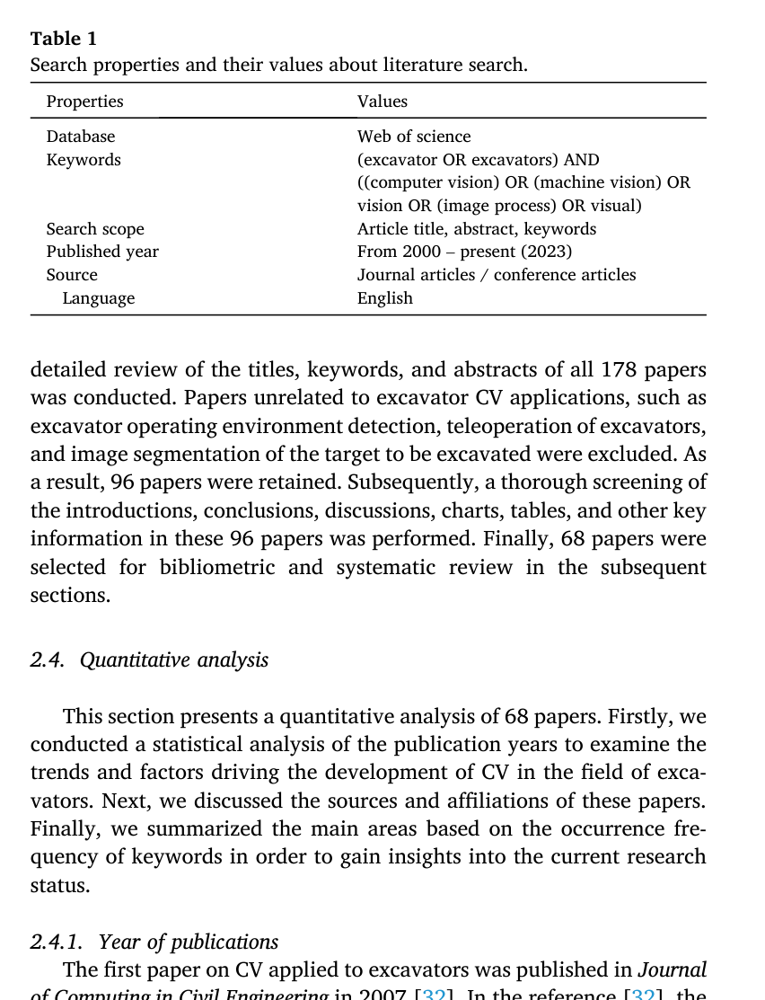
원문 Table 1 · PDF p.3 — Table 1 Search properties and their values about literature search.
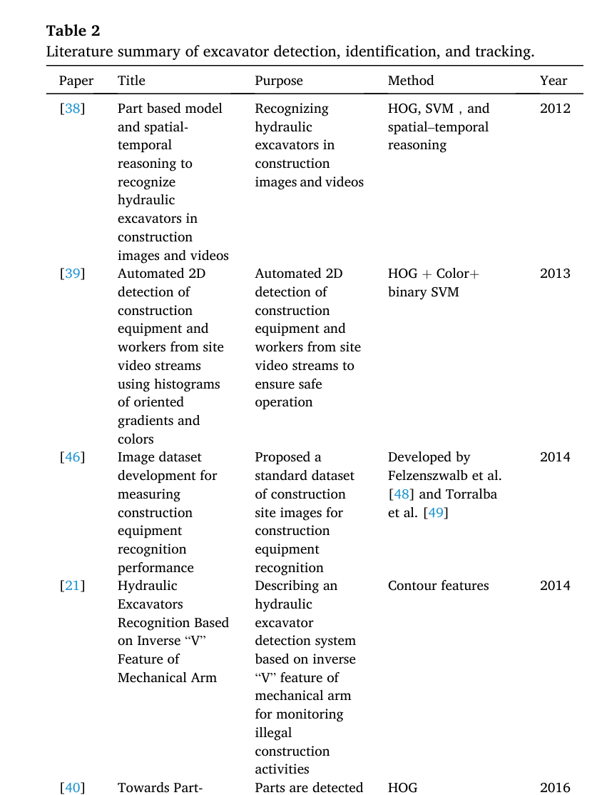
원문 Table 2 · PDF p.6 — Table 2 Literature summary of excavator detection, identification, and tracking.
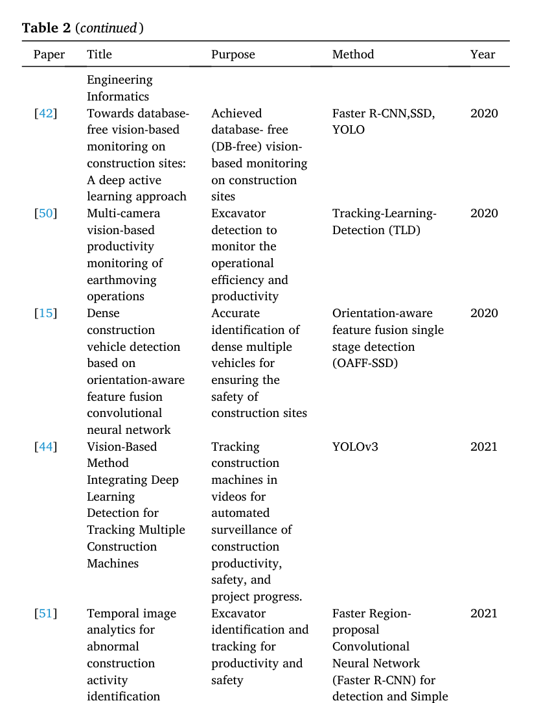
원문 Table 2 · PDF p.6 — Table 2 (continued)
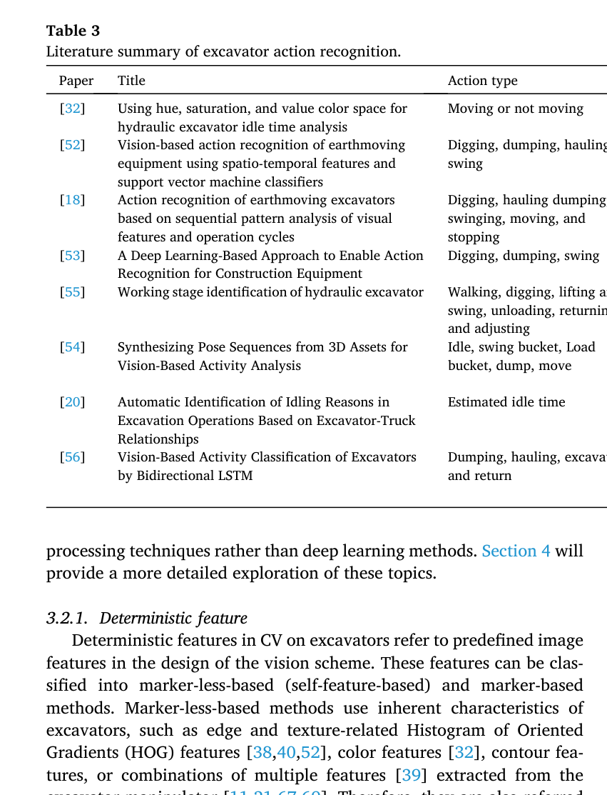
원문 Table 3 · PDF p.7 — Table 3 Literature summary of excavator action recognition.
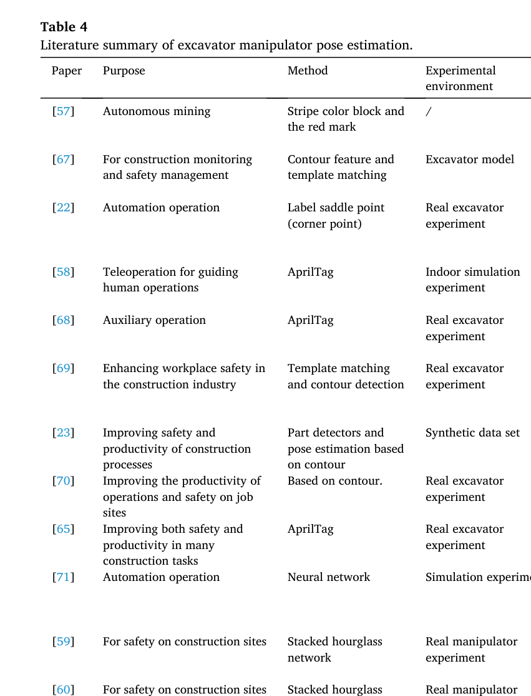
원문 Table 4 · PDF p.8 — Table 4 Literature summary of excavator manipulator pose estimation.
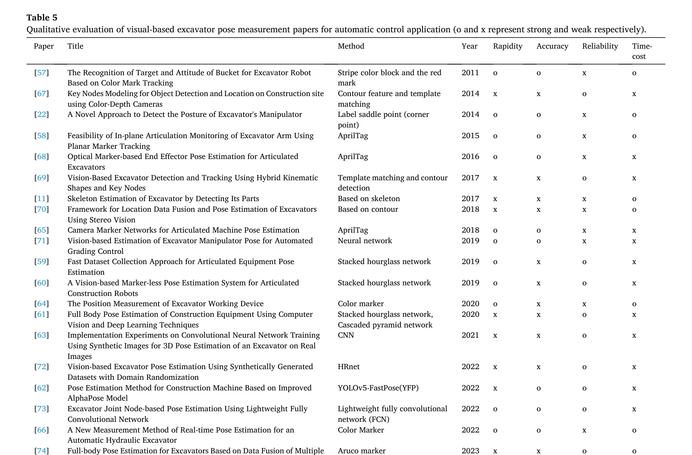
원문 Table 5 · PDF p.10 — Table 5 Qualitative evaluation of visual-based excavator pose measurement papers for automatic control application (o and x represent strong and weak respectively).
섹션별 원문 근거 페이지
배경: p.1, p.2
방법론: p.2, p.3
실험: p.3, p.4, p.8, p.10
결과: p.3, p.4, p.5, p.7, p.8, p.9, p.10, p.11
한계: p.10, p.11, p.12, p.13
원문·기존 요약·관련 자료
원문 PDFpdf
추출·교차검증 근거
Vision-based excavator pose estimation for automatic control.pdf